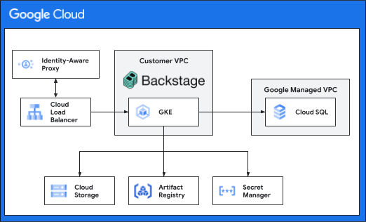

Backstage on Google Cloud Quickstart¶
This quick-start deployment guide can be used to set up an environment to familiarize yourself with the architecture and get an understanding of the concepts related to hosting Backstage on Google Cloud.
NOTE: This environment is not intended to be a long lived environment. It is intended for temporary demonstration and learning purposes. You will need to modify the configurations provided to align with your orginazations needs. Along the way the guide will make callouts to tasks or areas that should be productionized in for long lived deployments.
Architecture¶
The following diagram depicts the high level architecture of the infrastucture that will be deployed.

Requirements and Assumptions¶
To keep this guide simple it makes a few assumptions. Where the are alternatives we have linked to some additional documentation.
- The Backstage quick start will be deployed in a new project that you will manually create. If you want to use a project managed through Terraform refer to the Terraform managed project section.
- Identity Aware Proxy (IAP) will be used for controlling access to Backstage.
Before you begin¶
In this section you prepare a folder for deployment.
- Open the Cloud Console
- Activate Cloud Shell \ At the bottom of the Cloud Console, a Cloud Shell session starts and displays a command-line prompt.
Project Creation¶
In this section you prepare your project for deployment.
-
Go to the project selector page in the Cloud Console. Select or create a Cloud project.
-
Make sure that billing is enabled for your Google Cloud project. Learn how to confirm billing is enabled for your project.
-
In Cloud Shell, set environment variables with the ID of your project:
-
Clone the repository and change directory to the guide directory
-
Set environment variables
Project Configuration¶
-
Set the project environment variables in Cloud Shell
-
Create a Cloud Storage bucket to store the Terraform state
Deploy Backstage¶
Before running Terraform, make sure that the Service Usage API and Service Management API are enabled.
-
Enable Service Usage API and Service Management API
-
Setup the Identity Aware Proxy brand
gcloud iap oauth-brands create \ --application_title="IAP Secured Backstage" \ --project="${PROJECT_ID}" \ --support_email="${IAP_SUPPORT_EMAIL}"Capture the brand name in an environment variable, it will be in the format of:
projects/[your_project_number]/brands/[your_project_number]. -
Using the brand name create the IAP client.
Capture the client_id and client_secret in environment variables. For the client_id we only need the last value of the string, it will be in the format of:
549085115274-ksi3n9n41tp1vif79dda5ofauk0ebes9.apps.googleusercontent.com -
Set the configuration variables
sed -i "s/YOUR_STATE_BUCKET/${BACKSTAGE_QS_STATE_BUCKET}/g" ${BACKSTAGE_QS_BASE_DIR}/backend.tf sed -i "s/YOUR_PROJECT_ID/${PROJECT_ID}/g" ${BACKSTAGE_QS_BASE_DIR}/backstage-qs.auto.tfvars sed -i "s/YOUR_IAP_USER_DOMAIN/${IAP_USER_DOMAIN}/g" ${BACKSTAGE_QS_BASE_DIR}/backstage-qs.auto.tfvars sed -i "s/YOUR_IAP_SUPPORT_EMAIL/${IAP_SUPPORT_EMAIL}/g" ${BACKSTAGE_QS_BASE_DIR}/backstage-qs.auto.tfvars sed -i "s/YOUR_IAP_CLIENT_ID/${IAP_CLIENT_ID}/g" ${BACKSTAGE_QS_BASE_DIR}/backstage-qs.auto.tfvars sed -i "s/YOUR_IAP_SECRET/${IAP_SECRET}/g" ${BACKSTAGE_QS_BASE_DIR}/backstage-qs.auto.tfvars -
Create the resources
cd ${BACKSTAGE_QS_BASE_DIR} && \ terraform init && \ terraform plan -input=false -out=tfplan && \ terraform apply -input=false tfplan && \ rm tfplanInitial run of the Terraform may result in errors due to they way the API services are asyrchonously enabled. Re-running the terraform usually resolves the errors.
This will take a while to create all of the required resources, figure somewhere between 15 and 20 minutes.
-
Build the container image for Backstage
The output of that command will include a fully qualified image path similar to:
us-central1-docker.pkg.dev/[your_project]/backstage-qs/backstage-quickstart:d747db2a-deef-4783-8a0e-3b36e568f6fcUsing that value create a new environment variable.This will take approximately 10 minutes to build and push the image.
-
Configure Cloud SQL postgres user for password authentication.
-
Grant the backstage workload service account create database permissions.
a. In the Cloud Console, navigate to
SQLb. Select the database instance
c. In the left menu select
Cloud SQL Studiod. Choose the
postgresdatabase and login with thepostgresuser and password you created in step 4.e. Run the following sql commands, to grant create database permissions
-
Perform an initial deployment of Kubernetes resources.
-
Capture the IAP audience, the Backend Service may take a few minutes to appear.
a. In the Cloud Console, navigate to
Security>Identity-Aware Proxyb. Verify the IAP option is set to enabled. If not enable it now.
b. Choose
Get JWT audience codefrom the three dot menu on the right side of your Backend Service.c. The value will be in the format of:
/projects/<your_project_number>/global/backendServices/<numeric_id>. Using that value create a new environment variable. -
Redeploy the Kubernetes manifests with the IAP audience
-
In a browser navigate to you backstage endpoint. The URL will be similar to
https://qs.endpoints.[your_project_id].cloud.goog
Cleanup¶
-
Destroy the resources using Terraform destroy
-
Delete the project
-
Remove Terraform files and temporary files
-
Reset the TF variables file
-
Remove the environment variables
Advanced Options¶
Terraform managed project¶
In some instances you will need to create and manage the project through Terraform. This quickstart provides a sample process and Terraform to create and destory the project via Terraform.
To run this part of the quick start you will need the following information and permissions.
- Billing account ID
- Organization or folder ID
roles/billing.userIAM permissions on the billing account specifiedroles/resourcemanager.projectCreatorIAM permissions on the organization or folder specified
Creating a Terraform managed project¶
-
Set the configuration variables
environment_name = "qs" iapUserDomain = "" iapSupportEmail = "" project = { billing_account_id = "XXXXXX-XXXXXX-XXXXXX" folder_id = "############" name = "backstage" org_id = "############" }Values required :
environment_name: the name of the environment (defaults to qs for quickstart)iapUserDomain: the root domain of the GCP Org that the Backstage users will be iniapSupportEmail: support contact for the IAP brandproject.billing_account_id: the billing account IDproject.name: the prefix for the display name of the project, the full name will be<project.name>-<environment_name>- Either
project.folder_idORproject.org_idproject.folder_id: the Google Cloud folder IDproject.org_id: the Google Cloud organization ID
-
Authorize
gcloud -
Create a new project
-
Set the project environment variables in Cloud Shell
Cleaning up a Terraform managed project¶
-
Destroy the project
cd ${BACKSTAGE_QS_BASE_DIR}/initialize && \ TERRAFORM_BUCKET_NAME=$(grep bucket backend.tf | awk -F"=" '{print $2}' | xargs) && \ cp backend.tf.local backend.tf && \ terraform init -force-copy -lock=false -migrate-state && \ gsutil -m rm -rf gs://${TERRAFORM_BUCKET_NAME}/* && \ terraform init && \ terraform destroy -auto-approve && \ rm -rf .terraform .terraform.lock.hcl state/
Re-using an Existing Project¶
In situations where you have run this quickstart before and then cleaned-up the resources but are re-using the project, it might be neccasary to restore the endpoints from a deleted state first.
BACKSTAGE_QS_PREFIX=$(grep environment_name \
${BACKSTAGE_QS_BASE_DIR}/backstage-qs.auto.tfvars | awk -F"=" '{print $2}' | xargs)
BACKSTAGE_QS_PROJECT_ID=$(grep environment_project_id \
${BACKSTAGE_QS_BASE_DIR}/backstage-qs.auto.tfvars | awk -F"=" '{print $2}' | xargs)
gcloud endpoints services undelete \
${BACKSTAGE_QS_PREFIX}.endpoints.${BACKSTAGE_QS_PROJECT_ID}.cloud.goog \
--quiet 2>/dev/null